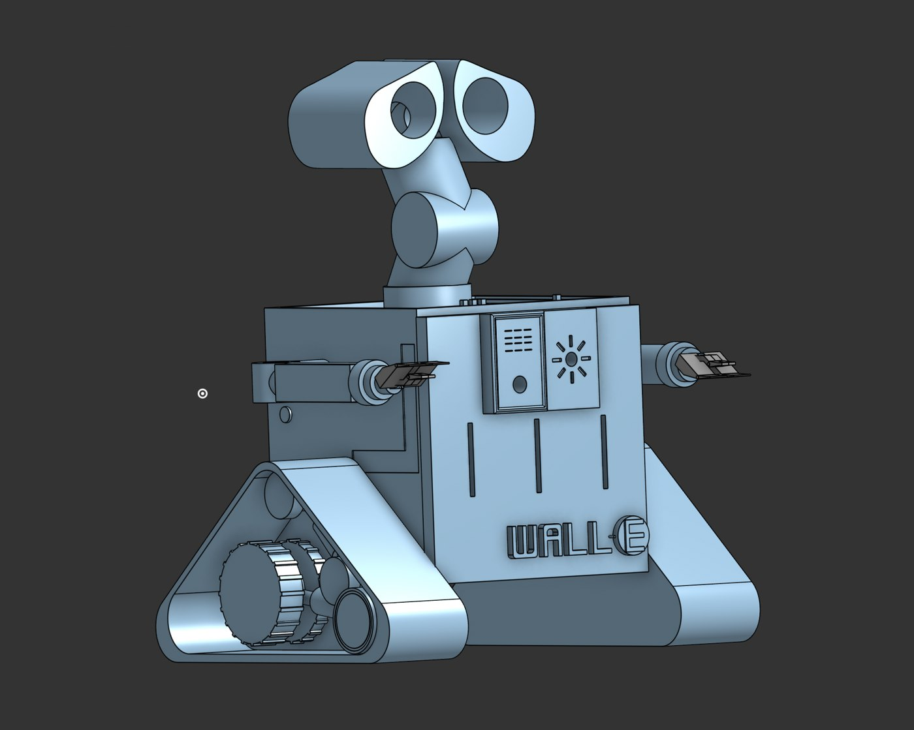
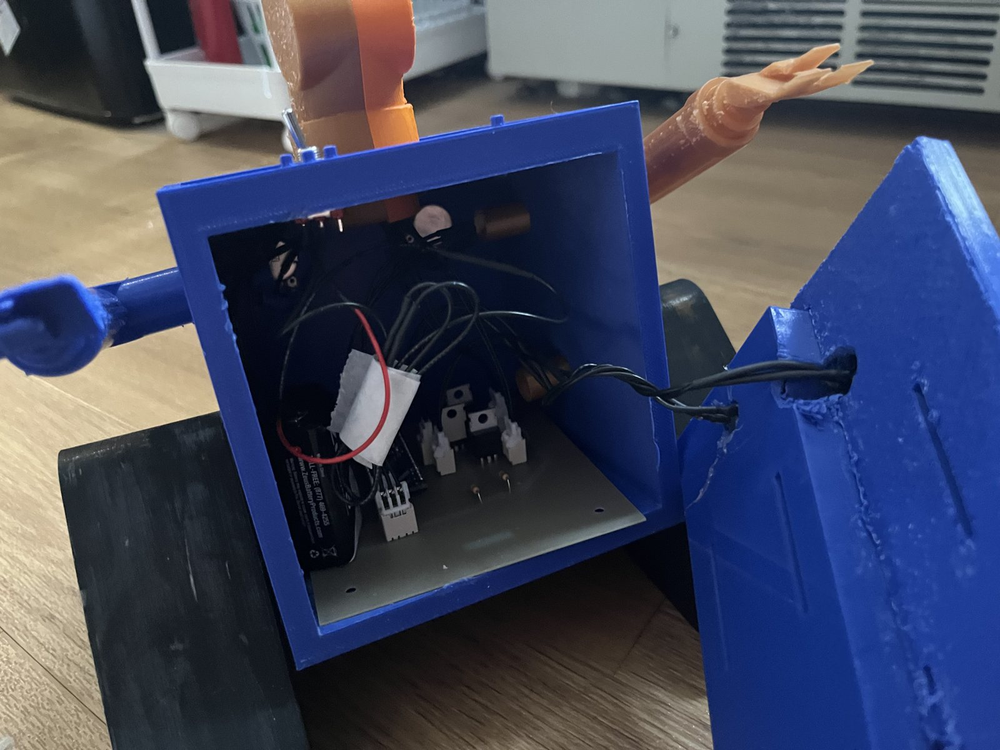
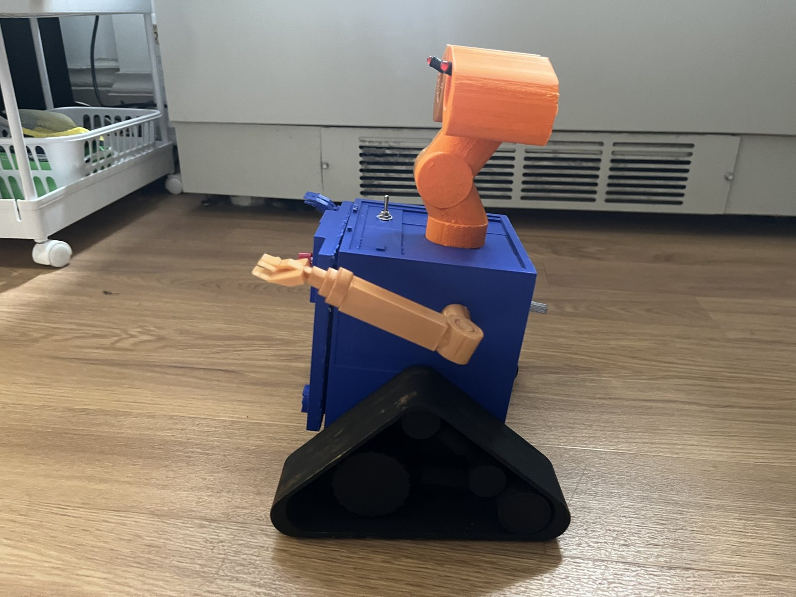
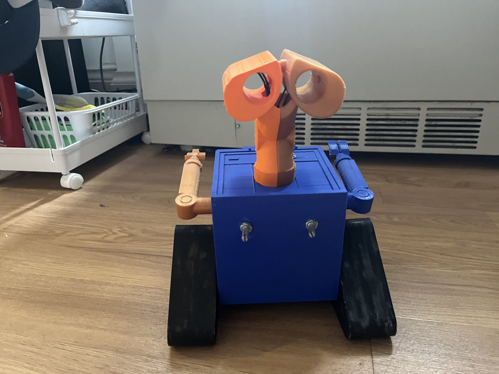

Case study · BME 254 · Spring 2025
Lightbox: a Wall-E that lights up on command
An LED control system inside a 3D-printed Wall-E. Press the button and his eyes glow while his battery light blinks. Two knobs set how bright the eyes are and how fast the light blinks.

The brief
Build a "one shot" light controller inside an enclosure shaped like a fun figure, with two LEDs as eyes and a third LED that blinks.
- A push button turns the eyes on for 5 seconds and the blinking LED on for 10 seconds.
- One potentiometer sets eye brightness from 0 to 100% using PWM. A second sets the blink rate from 5 to 10 Hz.
- Runs on a 9 V battery with a toggle power switch. Every LED is driven through an IRFZ44 MOSFET, on a single-sided PCB with the Arduino in a socket and every panel part on a connector.
I picked Wall-E because it would look great, and because I wanted to see if I could pull off a shape that complex.
How I built it
Enclosure in Onshape
Wall-E's eyes became the brightness LEDs, and the light on his chest that shows his battery became the blinking LED. I put the button on his door and the knobs on his back, left room inside for all the electronics, made his neck hollow so wires could reach the eyes, and designed the arms, treads, and door to press-fit into place.
Circuit in KiCad
A schematic with the Arduino Nano Every, two potentiometers, the push button, the toggle switch, and a MOSFET for each LED, all powered by the 9 V battery.
PCB layout
Sized the board to fit inside the body, and checked that there were no ground islands and that every connection was valid.
Mill and solder
Milled the board and soldered every component, watching LED polarity and switch orientation. Some cables came up short, so I spliced in extensions.
Firmware
Wrote it in C++ with PlatformIO. A button press starts both timers. The analog readings from the two knobs map to the eyes' PWM duty cycle and the battery light's blink frequency.
See it work




Testing and results
I measured the outputs with an oscilloscope, taking 10 readings at each knob setting, and analyzed them in Python with 95% confidence intervals and linear fits.
| Output | Target | Measured | Linearity |
|---|---|---|---|
| Eye brightness (PWM duty cycle) | 0 to 100%, set by knob | Every setting within about 1.3 points of target on average (for example, 19.9% at 20% and 80.8% at 80%) | R² = 0.9995 Pass |
| Battery light blink rate | 5 to 10 Hz, set by knob | Means within 0.15 Hz of target (4.93 Hz at 5 Hz, 9.90 Hz at 10 Hz) | R² = 0.998 Pass |
Both knobs respond in a nearly perfectly straight line, so turning a knob changes the brightness or blink rate evenly across its whole range.